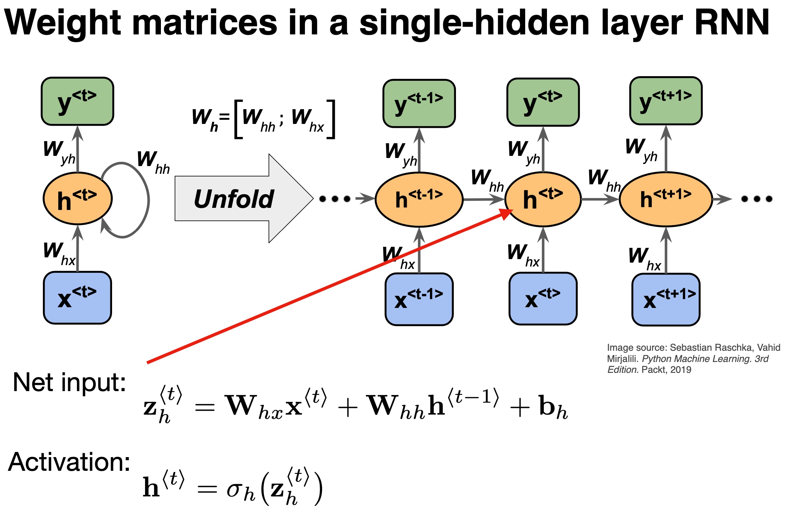

February 26-March 1: Advanced machine learning and data analysis for the physical sciences
February 26-March 1, 2024
Plans for the week February 26-March 1
- Finalizing discussion of Convolutional Neural Networks (CNNs)
- Discussion of recurrent neural networks (RNNs)
- Reading recommendations:
- Goodfellow, Bengio and Courville's chapter 10 from Deep Learning
- Sebastian Rashcka et al, chapter 15, Machine learning with Sickit-Learn and PyTorch
- David Foster, Generative Deep Learning with TensorFlow, see chapter 5
The last two books have codes for RNNs in PyTorch and TensorFlow/Keras. Next week we will study the solution of differential equations.
From FFNNs and CNNs to recurrent neural networks (RNNs)
There are limitation of FFNNs, one of which being that FFNNs are not designed to handle sequential data (data for which the order matters) effectively because they lack the capabilities of storing information about previous inputs; each input is being treated indepen- dently. This is a limitation when dealing with sequential data where past information can be vital to correctly process current and future inputs.
Feedback connections
In contrast to FFNs, recurrent networks introduce feedback connections, meaning the information is al- lowed to be carried to subsequent nodes across different time steps. These cyclic or feedback connections have the objective of providing the network with some kind of memory, making RNNs particularly suited for time- series data, natural language processing, speech recog- nition, and several other problems for which the order of the data is crucial. RNN architectures vary greatly in how they manage information flow and memory in the network.
Vanishing gradients
Different architectures often aim at improving some sub-optimal characteristics of the network. The simplest form of recurrent network, commonly called simple or vanilla RNN, for example, is known to suffer from the problem of vanishing gradients. This problem arises due to the nature of backpropagation in time. Gradients of the cost/loss function may get exponentially small (or large) if there are many layers in the network, which is the case of RNN when the sequence gets long.
Recurrent neural networks (RNNs): Overarching view
Till now our focus has been, including convolutional neural networks as well, on feedforward neural networks. The output or the activations flow only in one direction, from the input layer to the output layer.
A recurrent neural network (RNN) looks very much like a feedforward neural network, except that it also has connections pointing backward.
RNNs are used to analyze time series data such as stock prices, and tell you when to buy or sell. In autonomous driving systems, they can anticipate car trajectories and help avoid accidents. More generally, they can work on sequences of arbitrary lengths, rather than on fixed-sized inputs like all the nets we have discussed so far. For example, they can take sentences, documents, or audio samples as input, making them extremely useful for natural language processing systems such as automatic translation and speech-to-text.
Sequential data only?
An important issue is that in many deep learning methods we assume that the input and output data can be treated as independent and identically distributed, normally abbreviated to iid. This means that the data we use can be seen as mutually independent.
This is however not the case for most data sets used in RNNs since we are dealing with sequences of data with strong inter-dependencies. This applies in particular to time series, which are sequential by contruction.
Differential equations
As an example, the solutions of ordinary differential equations can be represented as a time series, similarly, how stock prices evolve as function of time is another example of a typical time series, or voice records and many other examples.
Not all sequential data may however have a time stamp, texts being a typical example thereof, or DNA sequences.
The main focus here is on data that can be structured either as time series or as ordered series of data. We will not focus on for example natural language processing or similar data sets.
A simple example
# Start importing packages
import pandas as pd
import numpy as np
import matplotlib.pyplot as plt
import tensorflow as tf
from tensorflow.keras import datasets, layers, models
from tensorflow.keras.layers import Input
from tensorflow.keras.models import Model, Sequential
from tensorflow.keras.layers import Dense, SimpleRNN, LSTM, GRU
from tensorflow.keras import optimizers
from tensorflow.keras import regularizers
from tensorflow.keras.utils import to_categorical
# convert into dataset matrix
def convertToMatrix(data, step):
X, Y =[], []
for i in range(len(data)-step):
d=i+step
X.append(data[i:d,])
Y.append(data[d,])
return np.array(X), np.array(Y)
step = 4
N = 1000
Tp = 800
t=np.arange(0,N)
x=np.sin(0.02*t)+2*np.random.rand(N)
df = pd.DataFrame(x)
df.head()
values=df.values
train,test = values[0:Tp,:], values[Tp:N,:]
# add step elements into train and test
test = np.append(test,np.repeat(test[-1,],step))
train = np.append(train,np.repeat(train[-1,],step))
trainX,trainY =convertToMatrix(train,step)
testX,testY =convertToMatrix(test,step)
trainX = np.reshape(trainX, (trainX.shape[0], 1, trainX.shape[1]))
testX = np.reshape(testX, (testX.shape[0], 1, testX.shape[1]))
model = Sequential()
model.add(SimpleRNN(units=32, input_shape=(1,step), activation="relu"))
model.add(Dense(8, activation="relu"))
model.add(Dense(1))
model.compile(loss='mean_squared_error', optimizer='rmsprop')
model.summary()
model.fit(trainX,trainY, epochs=100, batch_size=16, verbose=2)
trainPredict = model.predict(trainX)
testPredict= model.predict(testX)
predicted=np.concatenate((trainPredict,testPredict),axis=0)
trainScore = model.evaluate(trainX, trainY, verbose=0)
print(trainScore)
plt.plot(df)
plt.plot(predicted)
plt.show()
RNNs
RNNs are very powerful, because they combine two properties:
- Distributed hidden state that allows them to store a lot of information about the past efficiently.
- Non-linear dynamics that allows them to update their hidden state in complicated ways.
With enough neurons and time, RNNs can compute anything that can be computed by your computer.
What kinds of behaviour can RNNs exhibit?
- They can oscillate.
- They can settle to point attractors.
- They can behave chaotically.
- RNNs could potentially learn to implement lots of small programs that each capture a nugget of knowledge and run in parallel, interacting to produce very complicated effects.
But the extensive computational needs of RNNs makes them very hard to train.
Basic layout, Figures from Sebastian Rashcka et al, Machine learning with Sickit-Learn and PyTorch

Solving differential equations with RNNs
To gain some intuition on how we can use RNNs for time series, let us tailor the representation of the solution of a differential equation as a time series.
Consider the famous differential equation (Newton's equation of motion for damped harmonic oscillations, scaled in terms of dimensionless time)
$$
\frac{d^2x}{dt^2}+\eta\frac{dx}{dt}+x(t)=F(t),
$$
where \( \eta \) is a constant used in scaling time into a dimensionless variable and \( F(t) \) is an external force acting on the system. The constant \( \eta \) is a so-called damping.
Two first-order differential equations
In solving the above second-order equation, it is common to rewrite it in terms of two coupled first-order equations with the velocity
$$
v(t)=\frac{dx}{dt},
$$
and the acceleration
$$
\frac{dv}{dt}=F(t)-\eta v(t)-x(t).
$$
With the initial conditions \( v_0=v(t_0) \) and \( x_0=x(t_0) \) defined, we can integrate these equations and find their respective solutions.
Velocity only
Let us focus on the velocity only. Discretizing and using the simplest possible approximation for the derivative, we have Euler's forward method for the updated velocity at a time step \( i+1 \) given by
$$
v_{i+1}=v_i+\Delta t \frac{dv}{dt}_{\vert_{v=v_i}}=v_i+\Delta t\left(F_i-\eta v_i-x_i\right).
$$
Defining a function
$$
h_i(x_i,v_i,F_i)=v_i+\Delta t\left(F_i-\eta v_i-x_i\right),
$$
we have
$$
v_{i+1}=h_i(x_i,v_i,F_i).
$$
Linking with RNNs
The equation
$$
v_{i+1}=h_i(x_i,v_i,F_i).
$$
can be used to train a feed-forward neural network with inputs \( v_i \) and outputs \( v_{i+1} \) at a time \( t_i \). But we can think of this also as a recurrent neural network with inputs \( v_i \), \( x_i \) and \( F_i \) at each time step \( t_i \), and producing an output \( v_{i+1} \).
Noting that
$$
v_{i}=v_{i-1}+\Delta t\left(F_{i-1}-\eta v_{i-1}-x_{i-1}\right)=h_{i-1}.
$$
we have
$$
v_{i}=h_{i-1}(x_{i-1},v_{i-1},F_{i-1}),
$$
and we can rewrite
$$
v_{i+1}=h_i(x_i,h_{i-1},F_i).
$$
Minor rewrite
We can thus set up a recurring series which depends on the inputs \( x_i \) and \( F_i \) and the previous values \( h_{i-1} \). We assume now that the inputs at each step (or time \( t_i \)) is given by \( x_i \) only and we denote the outputs for \( \tilde{y}_i \) instead of \( v_{i_1} \), we have then the compact equation for our outputs at each step \( t_i \)
$$
y_{i}=h_i(x_i,h_{i-1}).
$$
We can think of this as an element in a recurrent network where our network (our model) produces an output \( y_i \) which is then compared with a target value through a given cost/loss function that we optimize. The target values at a given step \( t_i \) could be the results of a measurement or simply the analytical results of a differential equation.
RNNs in more detail

RNNs in more detail, part 2

RNNs in more detail, part 3

RNNs in more detail, part 4

RNNs in more detail, part 5

RNNs in more detail, part 6

RNNs in more detail, part 7

Backpropagation through time
We can think of the recurrent net as a layered, feed-forward net with shared weights and then train the feed-forward net with weight constraints.
We can also think of this training algorithm in the time domain:
- The forward pass builds up a stack of the activities of all the units at each time step.
- The backward pass peels activities off the stack to compute the error derivatives at each time step.
- After the backward pass we add together the derivatives at all the different times for each weight.
The backward pass is linear
- There is a big difference between the forward and backward passes.
- In the forward pass we use squashing functions (like the logistic) to prevent the activity vectors from exploding.
- The backward pass, is completely linear. If you double the error derivatives at the final layer, all the error derivatives will double.
The forward pass determines the slope of the linear function used for backpropagating through each neuron
The problem of exploding or vanishing gradients
- What happens to the magnitude of the gradients as we backpropagate through many layers?
- If the weights are small, the gradients shrink exponentially.
- If the weights are big the gradients grow exponentially.
- Typical feed-forward neural nets can cope with these exponential effects because they only have a few hidden layers.
- In an RNN trained on long sequences (e.g. 100 time steps) the gradients can easily explode or vanish.
- We can avoid this by initializing the weights very carefully.
- Even with good initial weights, its very hard to detect that the current target output depends on an input from many time-steps ago.
RNNs have difficulty dealing with long-range dependencies.
Mathematical setup
The expression for the simplest Recurrent network resembles that of a regular feed-forward neural network, but now with the concept of temporal dependencies
$$
\begin{align*}
\mathbf{a}^{(t)} & = U * \mathbf{x}^{(t)} + W * \mathbf{h}^{(t-1)} + \mathbf{b}, \notag \\
\mathbf{h}^{(t)} &= \sigma_h(\mathbf{a}^{(t)}), \notag\\
\mathbf{y}^{(t)} &= V * \mathbf{h}^{(t)} + \mathbf{c}, \notag\\
\mathbf{\hat{y}}^{(t)} &= \sigma_y(\mathbf{y}^{(t)}).
\end{align*}
$$
Back propagation in time through figures, part 1

Back propagation in time, part 2

Back propagation in time, part 3

Back propagation in time, part 4

Back propagation in time in equations
To derive the expression of the gradients of \( \mathcal{L} \) for the RNN, we need to start recursively from the nodes closer to the output layer in the temporal unrolling scheme - such as \( \mathbf{y} \) and \( \mathbf{h} \) at final time \( t = \tau \),
$$
\begin{align*}
(\nabla_{ \mathbf{y}^{(t)}} \mathcal{L})_{i} &= \frac{\partial \mathcal{L}}{\partial L^{(t)}}\frac{\partial L^{(t)}}{\partial y_{i}^{(t)}}, \notag\\
\nabla_{\mathbf{h}^{(\tau)}} \mathcal{L} &= \mathbf{V}^\mathsf{T}\nabla_{ \mathbf{y}^{(\tau)}} \mathcal{L}.
\end{align*}
$$
Chain rule again
For the following hidden nodes, we have to iterate through time, so by the chain rule,
$$
\begin{align*}
\nabla_{\mathbf{h}^{(t)}} \mathcal{L} &= \left(\frac{\partial\mathbf{h}^{(t+1)}}{\partial\mathbf{h}^{(t)}}\right)^\mathsf{T}\nabla_{\mathbf{h}^{(t+1)}}\mathcal{L} + \left(\frac{\partial\mathbf{y}^{(t)}}{\partial\mathbf{h}^{(t)}}\right)^\mathsf{T}\nabla_{ \mathbf{y}^{(t)}} \mathcal{L}.
\end{align*}
$$
Gradients of loss functions
Similarly, the gradients of \( \mathcal{L} \) with respect to the weights and biases follow,
$$
\begin{align*}
\nabla_{\mathbf{c}} \mathcal{L} &=\sum_{t}\left(\frac{\partial \mathbf{y}^{(t)}}{\partial \mathbf{c}}\right)^\mathsf{T} \nabla_{\mathbf{y}^{(t)}} \mathcal{L} \notag\\
\nabla_{\mathbf{b}} \mathcal{L} &=\sum_{t}\left(\frac{\partial \mathbf{h}^{(t)}}{\partial \mathbf{b}}\right)^\mathsf{T} \nabla_{\mathbf{h}^{(t)}} \mathcal{L} \notag\\
\nabla_{\mathbf{V}} \mathcal{L} &=\sum_{t}\sum_{i}\left(\frac{\partial \mathcal{L}}{\partial y_i^{(t)} }\right)\nabla_{\mathbf{V}^{(t)}}y_i^{(t)} \notag\\
\nabla_{\mathbf{W}} \mathcal{L} &=\sum_{t}\sum_{i}\left(\frac{\partial \mathcal{L}}{\partial h_i^{(t)}}\right)\nabla_{\mathbf{w}^{(t)}} h_i^{(t)} \notag\\
\nabla_{\mathbf{U}} \mathcal{L} &=\sum_{t}\sum_{i}\left(\frac{\partial \mathcal{L}}{\partial h_i^{(t)}}\right)\nabla_{\mathbf{U}^{(t)}}h_i^{(t)}.
\tag{1}
\end{align*}
$$
Summary of RNNs
Recurrent neural networks (RNNs) have in general no probabilistic component in a model. With a given fixed input and target from data, the RNNs learn the intermediate association between various layers. The inputs, outputs, and internal representation (hidden states) are all real-valued vectors.
In a traditional NN, it is assumed that every input is independent of each other. But with sequential data, the input at a given stage \( t \) depends on the input from the previous stage \( t-1 \)
A typical RNN
- Weight matrices \( U \), \( W \) and \( V \) that connect the input layer at a stage \( t \) with the hidden layer \( h_t \), the previous hidden layer \( h_{t-1} \) with \( h_t \) and the hidden layer \( h_t \) connecting with the output layer at the same stage and producing an output \( \tilde{y}_t \), respectively.
- The output from the hidden layer \( h_t \) is oftem modulated by a \( \tanh{} \) function \( h_t=f(x_t,h_{t-1})=\tanh{(Ux_t+Wh_{t-1}+b)} \) with \( b \) a bias value
- The output from the hidden layer produces \( \tilde{y}_t=g(Vh_t+c) \) where \( c \) is a new bias parameter.
- The output from the training at a given stage is in turn compared with the observation \( y_t \) thorugh a chosen cost function.
The function \( g \) can any of the standard activation functions, that is a Sigmoid, a Softmax, a ReLU and other. The parameters are trained through the so-called back-propagation through time (BPTT) algorithm.
Four effective ways to learn an RNN and preparing for next week
- Long Short Term Memory Make the RNN out of little modules that are designed to remember values for a long time.
- Hessian Free Optimization: Deal with the vanishing gradients problem by using a fancy optimizer that can detect directions with a tiny gradient but even smaller curvature.
- Echo State Networks: Initialize the input a hidden and hidden-hidden and output-hidden connections very carefully so that the hidden state has a huge reservoir of weakly coupled oscillators which can be selectively driven by the input.
- ESNs only need to learn the hidden-output connections.
- Good initialization with momentum Initialize like in Echo State Networks, but then learn all of the connections using momentum
Long Short Term Memory (LSTM)
LSTM uses a memory cell for modeling long-range dependencies and avoid vanishing gradient problems.
- Introduced by Hochreiter and Schmidhuber (1997) who solved the problem of getting an RNN to remember things for a long time (like hundreds of time steps).
- They designed a memory cell using logistic and linear units with multiplicative interactions.
- Information gets into the cell whenever its “write” gate is on.
- The information stays in the cell so long as its keep gate is on.
- Information can be read from the cell by turning on its read gate.